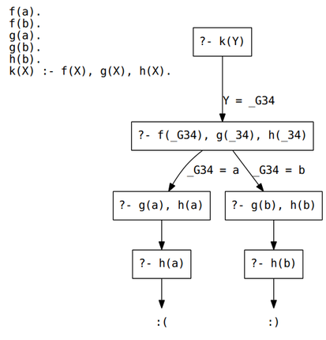
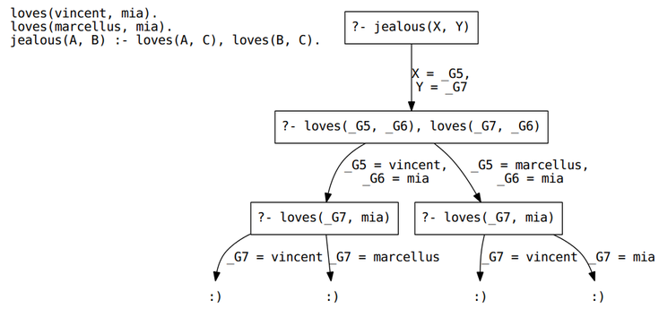
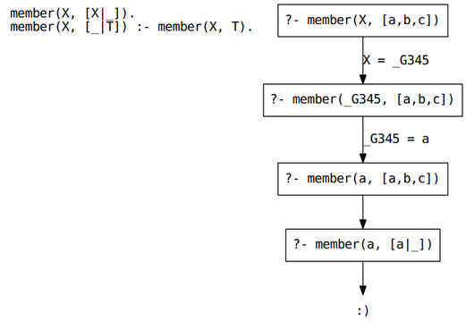

Prolog resolution
Suppose we have the following knowledge base:
f(a). f(b). g(a). g(b). h(b). k(X) :- f(X), g(X), h(X).
How does Prolog determine whether k(Y) is true (provable)? That is,
how does Prolog determine the value for Y that makes the query true?
Its search process can be see in this graphic. The process is as follows:
- Create a temporary variable
_G34(randomly-named) to stand in forY. This is an implementation detail, so that if some other rule usesY(a completely different variable), then the variable names don’t collide. - The goal is to prove
k(_G34). To do so, provingf(_G34), g(_G34), h(_G34)will be enough. This is the new goal. - To satisfy the first part of the new goal,
f(_G34), the knowledge base is searched. There is no rule forf/1(the predicate with arity one) but there is a fact:f(a). The first matching fact/rule is tried first. Thus,_G34gets set toa(from unification). - Now,
g(a), h(a)is the new goal.g(a)is satisfied just fine, because exactly that term is found in the knowledge base (trivial unification). - Now,
h(a)is the new goal. But, nothing in the knowledge base unifies withh(a)and there is noh/1rule, so there is a problem. - Go to the last decision point. This was when
_G34was set toa. Try to set it to something else.f(b)is in the knowledge base as well, so go with_G34 = b. - The new goal is
g(b), h(b), etc… (which ultimately works).

Now we’ll switch to this knowledge base:
loves(vincent, mia). loves(marcellus, mia). jealous(A, B) :- loves(A, C), loves(B, C).
How is the proof for jealous(X, Y) found, and what values to the
variables take?
The proof tree is shown below. Note that there are four smiley-face leaves in tree. This means there are four different ways to get a proof, which in this case means there are four different variable assignments.

Finally, let’s look at a list predicate.
member(X, [X|_]). member(X, [_|T]) :- member(X, T).
This is familiar to us from the Prolog notes. When we query with
member(X, [a, b, c]) we get that X = a.

Much of these notes were adapted from Learn Prolog Now!, a free online textbook.